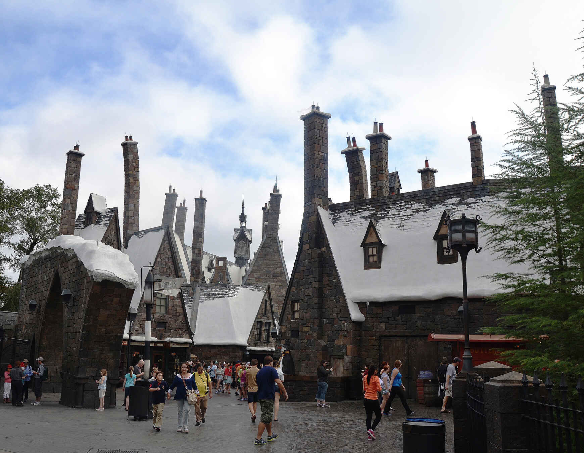

В большом комплексе Universal Orlando Resort находится несколько парков развлечений с разными тематиками, один из них — «Волшебный мир Гарри Поттера» (Wizarding World of Harry Potter). В двух частях парка Universal воссозданы локации из романов Джоанн К. Роулинг:
- Universal Studios Florida: в этой части комплекса можно прогуляться по Косому переулку. Здесь предлагается пообедать в «Дырявом котле», увидеть, как происходит выбор палочки в магазине Олливандера, и совершить приключение в банке Гринготтс;
- Universal's Islands of Adventure предлагает посетителям больше аттракционов по замку Хогвартса и встречи с различными волшебными существами из мира Гарри Поттера. В этой части парка есть также сувенирные магазины и стилизованные кафе.
Перемещаться между двумя частями парка Universal Orlando предлагается на специальном поезде «Хогвартс Экспресс». Гости тематического парка Гарри Поттера обычно приезжают сюда на несколько дней, для постояльцев отелей развлекательного комплекса созданы специальные предложения по посещению аттракционов, в том числе ранний допуск до официального открытия парка.
Парк аттракционов Гарри Поттера занимает площадь более 8 га.
Режим работы волшебного парка Гарри Поттера в обычные дни: 09:00—17:00, но часы меняются в зависимости от сезона, дня недели и праздничных дат. Рекомендуется проверять актуальное расписание на . «Волшебный мир Гарри Поттера» приглашает посетителей отметить рождество на сайте парка Юниверсал празднично украшенных улицах парка развлечений. С конца ноября проводится шоу ночных огней на замке Хогвартса, а также организуются другие развлечения.
Цены в парке Гарри Поттера
Стоимость билетов зависит от возраста гостей, количества дней и сезона, выбранных для визита, а также от того, какие парки вы решите осмотреть:
- однодневный билет в один парк позволяет посетить либо Universal Studios Florida, либо Universal's Islands of Adventure. Взрослые (от 10 лет) — 109 $, дети (3–9 лет) — 104 $;
- однодневный билет в два парка: взрослые — 164 $, дети — 159 $;
- двухдневный билет с посещением только одного парка в один день, то есть вы можете пройти в другой парк лишь на следующий день. Первый день можно выбрать из 7-дневного периода, который выделяется в случае приобретения билетов более чем на 1 день. Билет действует в течение двух дней подряд. Взрослые — 176 $, дети — 168 $;
- двухдневный билет со свободным посещением обоих парков мира Гарри Поттера: взрослые — от 224 $, дети — от 216 $;
- трехдневный билет, позволяющий посетить в один день только один из двух парков: взрослые — от 197 $, дети — от 189 $;
- трехдневный билет со свободным посещением обоих парков в любое время в течение трех дней подряд. Взрослые — от 245 $, дети — от 237 $.
Путеводитель
В «Волшебном мире Гарри Поттера» можно найти разные развлечения в обеих частях парка. При воссоздании ярких мест были учтены многие детали, чтобы гости почувствовали себя в настоящем мире волшебников. Многие в отзывах делятся восторгом от того, что декорации в парке Гарри Поттера действительно созданы максимально приближенно к тому, как они выглядят в фильмах о мальчике-волшебнике. Не зря в оформлении парка помогали создатели декораций из фильмов о Гарри Поттере.
На территории Universal Studios Florida из парка развлечений Гарри Поттера находится Косой переулок, где можно посетить:
- аттракцион «Гарри Поттер и побег из Гринготтса». Здесь посетителям предлагается пройти под огнедышащим драконом, чтобы зайти в банк Гринготтс, увидеть гоблинов и отправиться в путешествие по подземным хранилищам банка. В ходе захватывающей поездки вы встретите любимых героев из книги. В банке Гринготтс можно также обменять доллары США (10 или 20 $) на банкноты гоблинов, которые принимают к оплате торговые точки тематического парка;
- магазин волшебных палочек Олливандера, где многие покупают собственную волшебную палочку из мира Гарри Поттера и испытывают ее магию в определенных местах Косого переулка. В воссозданном переулке также имеются другие лавки, встречающиеся в книге: от зловещего «Боргин и Беркс» до «Трюков волшебников Уизли». В многочисленных магазинах посетители приобретают форму для сквиддича, фирменную одежду учеников Хогвартса, плюшевых сов, игрушки, письменные принадлежности и другие волшебные предметы из мира Гарри Поттера;
- «Хогвартс Экспресс» перевозит гостей парка Гарри Поттера из зоны Universal Studios Florida во второй парк Universal's Islands of Adventure. В первом пункте оформлена станция вокзала Кингс-Кросс с платформой 9 ¾, от которой ваз везут к станции «Хогсмид» во втором парке. Во время поездки можно будет увидеть персонажей из фильма о мальчике, который выжил. Туристы советуют также смотреть в окна, в которых будут видны не только живописные пейзажи. Проезд на экспрессе доступен только владельцам билетов в оба парка.
Вторая часть развлечений Wizarding World of Harry Potter сосредоточена во втором парке Universal's Islands of Adventure:
- станция в волшебной деревне Хогсмид, до которой едет «Хогвартс Экспресс». Здесь вы можете зайти в таверну «Три метлы» или пойти на почту сов;
- «Приключение на мотоцикле с волшебными существами Хагрида» — это аттракцион по типу американских горок, имитирующий поездку в Запретный лес;
- «Полет Гиппогрифа» — более спокойный вариант американских горок, который выбирают семьи в парке Гарри Поттера;
- «Гарри Поттер и Запретное Путешествие» предлагает познакомиться с любимыми интерьерами и комнатами школы колдовства и волшебства Хогвартс, а затем совершить полет над замком. Этот аттракцион особенно любят гости парка Гарри Поттера в Орландо, так как здесь они попадают в помещения, о которых читали в книгах: кабинет Дамблдора, коридоры, классные комнаты. Благодаря 3D и 4D-анимации, а также самым современным технологиям, можно увидеть реалистичные сцены с героями из волшебного мира Гарри Поттера;
- «Темные искусства в замке Хогвартс». В определенные дни по ночам можно попасть на представление с Дементорами, Пожирателями Смерти и Темным Лордом Волдемортом;
- тематические магазины также имеются в этой части парка развлечений Гарри Поттера. Так, здесь можно увидеть вещи, конфискованные школьным смотрителем Филчем. Популярностью пользуется «Сладкое королевство» — магазин с красочными и необычными сладостями.